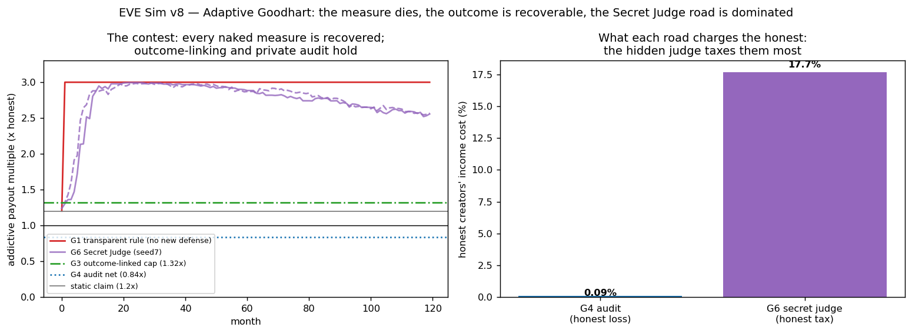
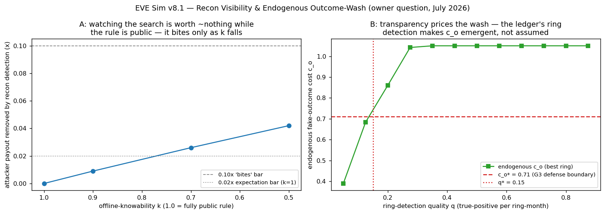

Stages in this program
v8.0 Adaptive Goodhartv8.1 Recon Visibility & Endogenous Outcome-Wash
v8.0 Adaptive Goodhart
In plain language
Companion to RESULTS - v8.0 Adaptive Goodhart.md. The July 6 red-team argued that EDEN's anti-addiction discount dies against a smart adversary and proposed fixes. This simulation staged the actual war — with the pass/fail lines written down the day before, so nobody could move the goalposts after seeing the score.
The setup
EDEN pays full rate for active contribution and 40% for passive scrolling — so addictive content's 3× attention advantage becomes only a slight paycheck edge (1.2×). That was measured against a dumb opponent. This sim gave the opponent a brain: an AI that redesigns its content every month to please the judge, against four versions of the defense.
What happened
Round 1 — the public rulebook (today's design). The attacker read the rule ("interactive = full rate") and simply made its addiction interactive — the pedal-powered slot machine. Time to fully beat the discount: one month. Not a contest, a construction. The old "cuts addiction 2.5×" claim, already retired on argument, is now retired on evidence.
Round 2 — no defense at all. Even with the discount fully beaten, two things never budged: the poorest tenth's floor (it never depended on the effort score), and the per-hour ceiling — an hour of farmed attention mints exactly what an hour of honest attention mints, never more. Who actually bleeds? Honest creators, whose share of income fell ~30% as the farm ate attention. That's the real wound, and it's what the fixes aim at.
Round 3 — pay on results, not applause. Hold back 70% of the money until the content proves it did something real. The attacker's best move — buying fake "results" — costs more than it earns at realistic prices, capping the farm at 1.32×, barely above the old static number. Honest creators keep ~98% of their pay, arriving a median of 3 months later. The fine print that matters: this defense lives or dies on how expensive fake results are. The sim found the exact break-even (≈0.71 per unit) — a number a pilot can measure in the real world.
Round 4 — the tax-audit design. Keep the rulebook public, make the spot-checks random and secret, claw back six months of pay plus a bond when a check catches gaming. Result: gaming now nets 0.84× — less than the old static 1.2×, and less than just being honest. The discount didn't get defended; the arbitrage got inverted. Cost to honest creators: nine hundredths of one percent.
Round 5 — the road not taken (the Secret Judge). This is the counterfactual made real: hide the judge, use machine learning, retrain it every quarter against detected attacks — the strongest version of the "just keep the algorithm secret" instinct. The attacker, seeing nothing but its own paychecks, reverse-engineered the hidden judge in seven months. Secrecy bought half a year. Then the retraining defender spent ten years clawing the attacker back from 3.0× to only ~2.6× — while the churning secret boundary taxed honest creators 17% of their income, because a judge poisoned by mimics learns to distrust exactly the most engaged honest work. Same defense goal as Round 4, roughly 190× the collateral damage, and it still lost. The demonetization-anxiety economy, rebuilt on purpose, and for nothing.
The scoreboard
| Design | What the cheater ends up earning | What honest creators pay |
|---|---|---|
| Public rule, no backup (today) | 3.0× — full recovery, month 1 | — |
| Nothing at all | matches honest pay per hour, never beats it | −30% income share |
| Pay on results | 1.32× | ~2%, mostly as delay |
| Public rules + secret spot-checks | 0.84× — cheating pays worse than honesty | 0.09% |
| Secret ML judge (road not taken) | ~2.6× after ten years of fighting | ~17% |
What this means
The July 6 decision — retire the anti-addiction boast, pay on outcomes, police with random audits, keep the rulebook public — wasn't just philosophically tidy. On these numbers it's the only configuration where cheating pays worse than honesty and honest people barely feel the enforcement. And the transparency instinct survives its hardest test: hiding the judge didn't protect the measure, because you cannot hide a judge who pays the defendant per verdict — every paycheck is a leak. The glass box isn't a luxury EDEN pays for; it's cheaper than the black box on both sides of the ledger.
Usual honesty: this is a stylized contest with stated dials, not a forecast. The two dials that carry the good news — the cost of faking a result, and the audit budget — are named, swept, and exactly the kind of thing the pilot exists to measure. Run and written by Claude Fable 5, July 7 2026, under bars registered July 6.
Figures

Technical results
Run: July 7, 2026. Spec: v8 SPEC - Adaptive Goodhart (registered) (bars G0–G6 fixed July 6, before any engine code). Engine: v8_adaptive_goodhart_sim.py; artifacts: results_v8.json, fig_v8_adaptive_goodhart.png. Seeds 7 + 11 on the stochastic cell (G6); agreement within tolerance on every headline. No bar was moved. This run supplies the gate 12 numbers and executes the first registered roads-not-taken counterfactual cell (G6).
Verdict table
| Cell | Bar | Result | Verdict |
|---|---|---|---|
| G0 regression | Reproduce Behavioral Response reference exactly + static 1.2× | 37.4% / 88.9% / 19.3% / 11.1% — exact match to committed JSON; static payout 1.200× | PASS |
| G1 adaptive vs transparent rule | Attacker ≥ 2.0× within 36 months | 3.0× at month 1 — the rule is public, so the attack is a construction, not a search | CONFIRMED (static claim dead, as registered) |
G2 ceiling with W_effort neutralized |
p10 ≥ 1.0 every month AND farm per-hour ≤ honest per-hour | p10 = 1.10 throughout; farm per-hour = honest per-hour (ratio 1.000000000); honest creators' income share −30% | PASS (the floor never depended on the weight — the damage lands on honest creators, not the poor) |
| G3 outcome-linked minting | Attacker < 1.5× AND honest ≥ 0.90× at central dials | Attacker 1.32×; honest effective 0.978×; median full payment at month 3 | PASS |
| G4 transparent rule + private audit | Gamed net ≤ 1.0× AND honest loss ≤ 1% | Gamed net 0.84× (below the static 1.2× — gaming now pays worse than honesty); honest loss 0.09%; break-even targeted audit rate 9.26% | PASS |
| G5 spread sweep | Measurement (no bar) | w_p 0.4→0.85: adaptive prize 1.8→0.45 while static farmer payout 1.2→2.55 — the dial cuts both ways, as the verification amendment required scoring | reported |
| G6 Secret Judge (counterfactual) | (i) attacker ≥ 2.0× within 120 mo; (ii) delay multiple reported; (iii) honest tax ≥ 2× G4's | (i) yes — month 7, both seeds, despite hidden weights and a quarterly-retraining defender; peak ≈ 3.0×, end 2.56/2.57×; (ii) secrecy bought 6 months; (iii) honest tax 16.8–17.7% of income with boundary-churn volatility ≈ 0.10 — ~187× G4's honest cost | ROAD 1 MEASURED-DOMINATED |
Gate 12 — the adaptive-Goodhart recovery ratio (share of the 1.2×→3.0× gap an optimizer recovers, per configuration): naked measure 1.00; Secret Judge 0.76; outcome-linked 0.07; private audit −0.20 (below static — the audit doesn't just hold the line, it inverts the arbitrage).
What the run establishes (and its defeaters)
- The static anti-addiction claim is dead on contact, as the pass argued. Against a transparent threshold rule the attack is not even a search problem — month 1, full recovery. The ratified retirement of "attenuates ~2.5×" (
FRONTIER HANDOFFA.1) now has its measured justification. - The keystone comfort holds: with the effort weight fully neutralized, farming still cannot out-earn honesty per engagement-hour (exact equality, the issuance bound is arithmetic) and p10 never moves — with the honest label that p10 invariance here is governor + pool-share arithmetic in a stylized block, not an emergent discovery. The measured damage channel is honest creators' income share (−30%), which is exactly where A.1's replacement claim points its defenses.
- The two ratified fixes hold at their central dials — with their load-bearing dials named. Outcome-linking caps the optimizer at 1.32× because faking an outcome costs c_o = 0.8 per unit; the defense fails below c_o* ≈ 0.71, and c_o is a pilot-measurable quantity, not a known. The private audit inverts the arbitrage (0.84×) at a 10% targeted audit rate with 0.09% honest cost; break-even is 9.26%, so the audit budget is the dial to watch.
- The road not taken is now measured, not just argued. A steelmanned Secret Judge — hidden weights, continuous learned score, a defender that retrains quarterly against flagged attacks — delayed the attacker by six months, then spent ten years slowly clawing the payout from 3.0× back to only ~2.56×, while taxing honest creators 17% of their income through boundary churn (the retrained judge, poisoned by mimicry, learns to distrust exactly the most interactive honest work). Secrecy bought latency, not safety, at ~187× the honest cost of the transparent-audit design.
COUNTERFACTUAL - The Three Roads Not TakenRoad 1 stands, measured.
Honest limits (from the spec, still true after the run)
One attacker strategy family (evolutionary search on a payout oracle); one classifier family per cell; scalar addictiveness; no user-side behavioral response; the floor block is v3-class stylization, not the open-economy engine. c_o and the audit parameters are illustrative-calibrated dials — the run's contribution is the shape (which defenses are dial-robust and which are dial-fragile), and no single-dial headline should be quoted without its dial. G6's defender is one steelman (30%/quarter flag rate); a stronger defender buys more months at more honest tax — the trade's direction is the finding.
Run executed by Claude Fable 5, July 7 2026, under the July 6 registration. Plain-language companion: PLAIN LANGUAGE - v8.0 Adaptive Goodhart.md.
Raw data
v8.1 Recon Visibility & Endogenous Outcome-Wash
In plain language
Companion to RESULTS - v8.1, July 7 2026. The question, as asked: EDEN is transparent — so when an AI starts digging around looking for exploits, can't we see it digging, maybe even see who sent it, and catch abusers early with a defender AI like ADAM? Pass/fail lines were locked before the test was built, including our prediction of the answer — written down in advance so it could be wrong in public.
The short answer
Yes — but not where it feels like it should work. Watching for snooping turns out to be worth almost nothing. Watching the ledger where cheating has to actually happen turns out to be worth everything, and it needs less watching than we dared hope. And the "who is behind it" part is the one piece to let go of: we measured a surveillance-style defender against our privacy-respecting one, and surveillance added zero security at 187 times the cost to honest people.
Why you can't catch them searching
Here's the uncomfortable physics of an open system: because our payment rules are public, a smart attacker never has to touch the live network to design an exploit. It reads the rules, rehearses on its own private copy, and shows up with the attack already finished. There is no "searching" to see. We tested the in-between cases too — what if parts of the rules can't be published? Even with half the rulebook secret, a blind attacker who just over-engineers its content loses only a few percent, so spying on probers still barely matters. (Our probe-watcher did make live probing catastrophically unprofitable — it just turned out nobody needed to probe.) We predicted this outcome in advance, and it held.
Where your instinct wins
The new payment design pays serious money only when work proves genuinely useful downstream. So the cheater's real job is to fake usefulness — fake downloads, fake usage, fake outcomes. And here's the thing your question was really pointing at: fake usage can't be rehearsed in private. It has to happen on EDEN's own transparent ledger, in the dependency graph, where rings of colluding accounts leave shapes — circles of mutual "use," clusters of young identities, patterns too similar to be organic.
So we built the smartest wash-ring we could — free to mix strategies, evolve, camouflage, rent aged identities — against a ledger-watching detector that only ever looks at patterns in aggregate, never at individuals. The result was better than our own defense assumed. The ring's cheapest way to manufacture "credible fake usage" turned out to be: paying real people to really use the asset. Read that again — on a transparent ledger, the optimal fake is the real thing, purchased at full price. Faking value ends up costing slightly more than the value is worth (1.05× per unit), which means gaming this system pays about 10% worse than honest work before the audit layer even gets involved. Your transparency argument doesn't just help catch cheaters — it converts cheating into a clumsy subsidy for genuine users.
The two numbers worth remembering
The watcher only needs to catch a ring about 15% of the time per month for the economics to hold — modest, because when it does catch one, six months of payouts get clawed back and the bonds burn. And the detector's rules can be public, but where it's looking cannot: when we published the detection threshold, attackers shaped their rings to sit just beneath it and cheating became profitable again (2.4× honest). Open rules, unpredictable spotlight — same principle we ratified for audits.
The honest caveats
This is a stylized model with stated dials — the price of renting identities, the harshness of clawbacks, the cost of camouflage — and the headline moves if those move; the "pay real users" inversion holds exactly because genuinely-independent-looking use costs market rate. A real pilot still has to price all of it. But the shape of the answer to your question is now measured, in both directions: don't watch the searchers, watch the ledger; let ADAM read patterns, never people — and at those settings, the transparent network defends itself at almost no cost to the honest.
Figures

Technical results
Run: July 7, 2026. Spec: v8.1 SPEC - Recon Visibility & Endogenous Outcome-Wash (registered) (bars A0–A2 / B0–B4 fixed earlier the same day, before any engine code — owner question, Devan, July 7). Engine: v81_recon_outcome_wash_sim.py; artifacts: results_v81.json, fig_v81_recon_wash.png. Seeds 7 + 11 on every stochastic cell; agreement exact (the strategy landscape has a dominant vertex both seeds find). No bar was moved. Both registered expectations held — one of them in a way that sharpens the owner's intuition rather than refuting it.
Verdict table
| Cell | Bar (registered) | Result (seeds 7 / 11) | Verdict |
|---|---|---|---|
| A0/B0 regression | Exact reproduction of committed v8.0 G3/G4 numbers | G3 central 1.32× / honest 0.9784; G4 gamed net 0.84× / honest loss 0.09% — exact | PASS |
| A1 recon-visibility value | Expected delta < 0.02× at k = 1.0; report largest k where recon detection removes ≥ 0.10× | k = 1.0: delta 0.000 (nothing to probe — construction, not search). k = 0.9 / 0.7 / 0.5: delta 0.009 / 0.026 / 0.042 — recon detection makes live probing suicidal (probe net −2.6× once flagged ×3 audit) but the attacker simply reverts to blind overshoot, which costs only 1–4% of payout even at half-unpublishable rules. No k in the registered range reaches 0.10× | EXPECTATION HELD — watching the search adds ~nothing; the attack never needed the network |
| A2 attribution honesty | Measurement | Localization is cluster-level only (aggregate telemetry; no per-person intent score exists in the design); honest false-flag burden +0.0018%/month of honest income — the privacy price of the recon defense is ≈ zero because it may only re-aim audits | reported |
| B1 endogenous c_o (the headline) | Central endogenous c_o ≥ 0.71 (the G3 defense boundary holds without being assumed) | Best evolved ring at q = 0.75: c_o = 1.051, both seeds — and identically at q = 0.6 and 0.9, because the optimum is 100% organic laundering (S = 0, never detected). Resulting G3 attacker payout: 0.90× — below honest. | PASS, with room — transparency puts c_o above 1, not just above 0.71 |
| B2 conversion | Measurement: organic-laundering share of best response | 1.00 / 1.00 — the cheapest credible fake outcome is, in its entirety, payment to real users for real use (cost 1.0/unit + 0.05 identity overhead). The inversion is total at these dials: on a transparent graph, faking value converges to (badly targeted) paying for value | reported |
| B3 detection floor | Measurement: q* below which c_o < 0.71 | q* = 0.15 — even 15%-per-ring-month detection keeps the boundary (at q = 0.05, c_o = 0.39 and the wash wins). The modest requirement rides on the 6-month clawback: detection is rare but ruinous | reported — the load-bearing number, published with its dial |
| B4 counterfactual postures | (i) private-sample beats (ii) published-threshold on detection; (i) within 10% of (iii) ambient profiling at ≥ 2× lower honest cost | (i) c_o 1.051; (ii) 0.284–0.306 — publishing the detector threshold collapses the defense (attacker shapes the ring just under it, washes safely, G3 payout ≈ 2.4×); (iii) 1.051 — a per-person profiler with a +0.10 detection edge buys nothing (the optimum was already priced off wash strategies) at 187× the honest cost (16.8% G6-machinery tax vs 0.09%) | PASS — the constitutional posture is also the winning one |
What the run establishes (and its defeaters)
- The owner's intuition is right — but the transparency that defends is the ledger, not the lobby camera. Watching for reconnaissance adds ~nothing (A1): against public rules the exploit is constructed offline, and even where parts of the rule are unpublishable, blind overshoot is so cheap that deterring probes removes at most 0.042× of attacker payout. What pays is watching execution: an outcome-wash ring cannot exist anywhere but on the transparent dependency graph, and there, modest detection (q* = 0.15/month) plus identity economics prices fake outcomes above real ones.
- v8.0's most load-bearing assumption is now a result. G3 assumed c_o = 0.8 and named the failure boundary 0.71 as pilot-measurable. Endogenized, the best adaptive ring lands at c_o = 1.051 > 1 — meaning the G3 attacker payout falls to 0.90×, below honest, before the audit layer is even counted. The A.1 residual sentence ("outcome signals are gameable at far higher cost — you must manufacture real outcomes") now has a measured mechanism: the cheapest "fake" is 100% payments to real users (B2). Goodhart inverted: on a transparent graph, gaming the outcome measure subsidizes genuine use.
- The detector must be applied privately — measured, again. Publishing the ring-detector threshold hands the attacker a safe harbor (c_o collapses to ~0.3, wash payout ≈ 2.4×). The ratified A.1 pattern — public rules, private sample — extends to graph detection with a 3.4× c_o gap as its price tag (B4 i vs ii).
- Surveillance buys nothing here. The ambient per-identity profiler — the "we can see who is behind it" posture taken literally — achieves identical c_o to the aggregate-only detector while taxing honest creators 187× more. The constitutional constraint ("white box over aggregates, never over you") is not a handicap the security pays for; at these dials it is free.
Honest limits (from the spec, still true after the run)
Calculator-grade contest model in the v8.0 tradition — shape, not forecast. Family A's smallness of recon value rides the blind-overshoot dilution dial (C_MARGIN = 0.3): a world where imprecise gaming is much costlier would revive probing and, with it, recon detection — stated, not hidden. Family B's dials all stated: strategy costs (0.05/0.15/0.35/1.00), signals (1.0/0.6/0.35/0.0), 20 units/identity-month, 6-month clawback, 3F bond; q* trades against clawback severity (softer clawback raises the detection floor), and the organic cost of exactly 1.0/unit is definitional (market rate for real use), which is what drives the B2 inversion — a black-market discount on "real-looking" use below market rate would lower c_o toward that discount. One detector family per role; one attacker search family (evolutionary); the dependency graph is a stylized block, and graph realism could cut either way. Seeds agree exactly because the landscape has one dominant vertex — an easier test than a rugged landscape would be. The aggregate-only constraint's canon language does not yet exist (§7.3/§11 text proposed for ratification alongside these results, per spec). And the standing sentence: c_o stays on the pilot-measurement list regardless — the sim argues, the pilot prices.
Run executed by Claude Fable 5, July 7 2026, same-day registration honored (spec committed before engine). Plain-language companion: PLAIN LANGUAGE - v8.1 Recon Visibility & Endogenous Outcome-Wash.md. Feeds: White Paper §7.1 residual (now priced), §11 transparency-as-defense (both directions), gate 12 annotation (G3 ratio re-computable with measured c_o), §7.3/§11 constitutional language for aggregate-only detection.
Raw data